Back
 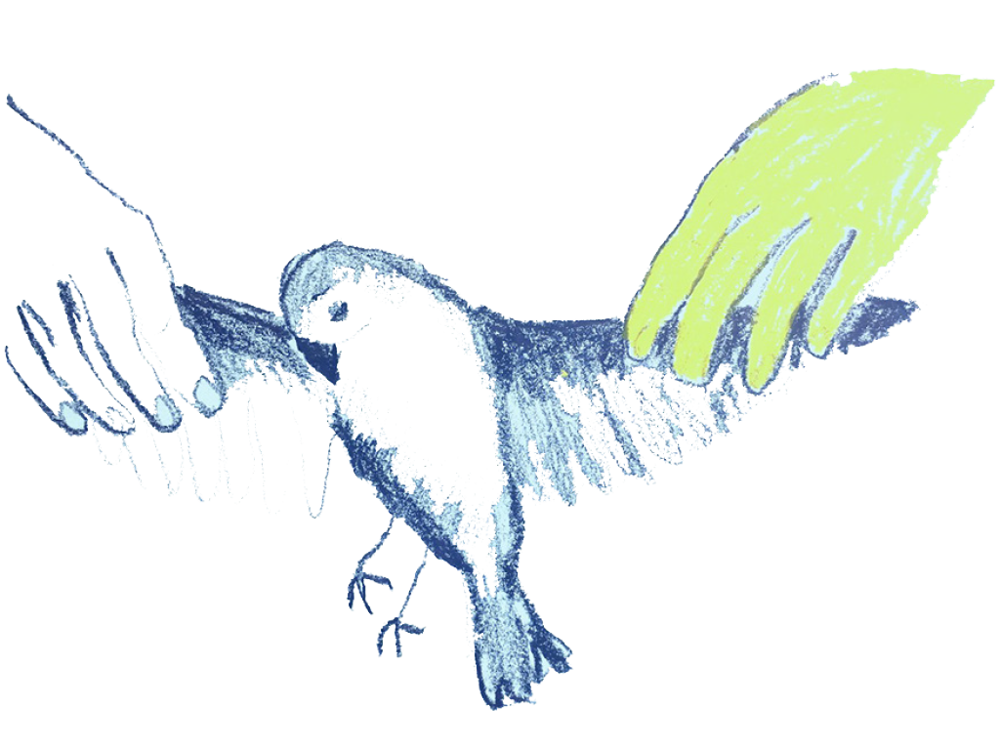
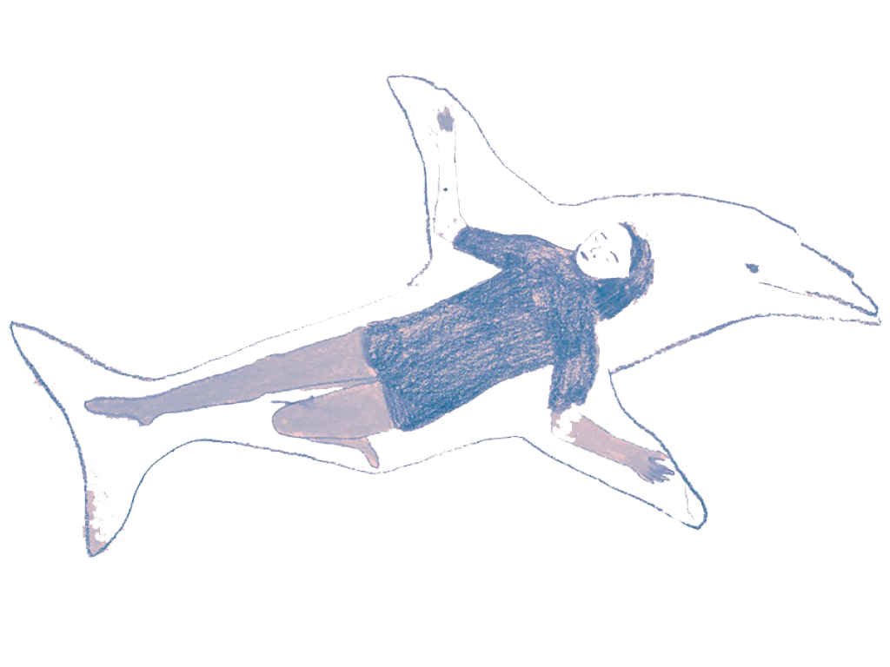
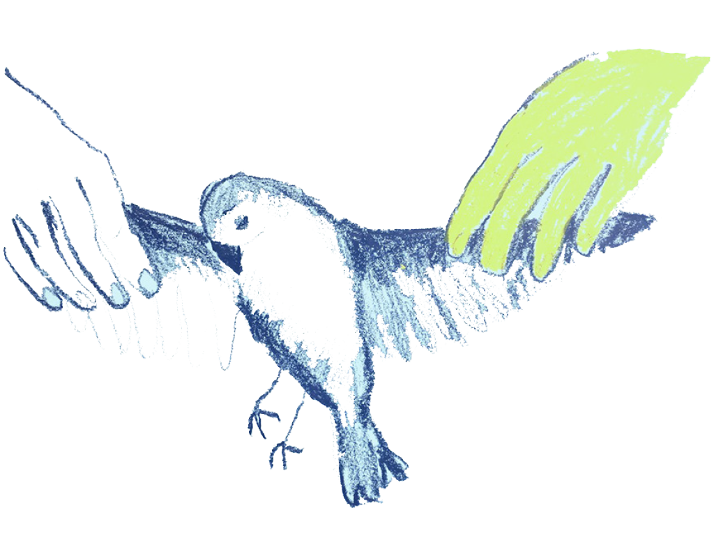
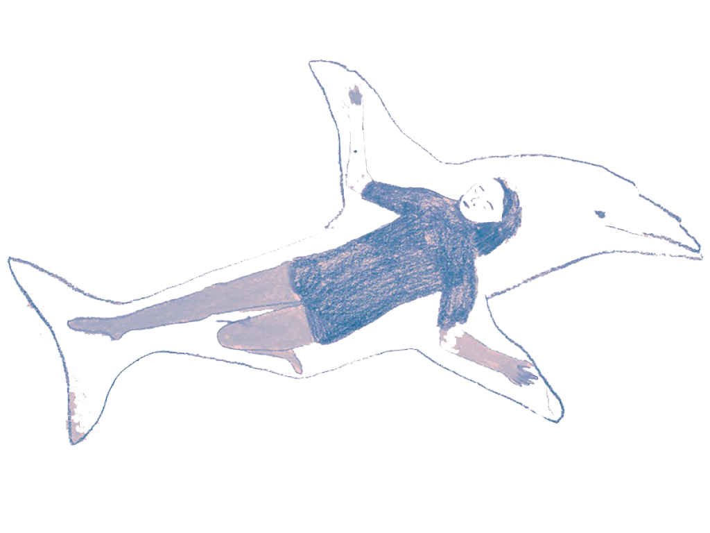
Waar je misschien denkt alles te moeten weten, hoeft dat hier niet. Koesteren en killen is een driedelig geluidssculptuur podcast serie elk van anderhalf minuut. Elke vertelling brengt je dichterbij je gevoel, een innerlijk gevoel die het dier in je naar boven haalt. Het dier gaat langzaam de confrontatie met jou als mens aan.
In de drie keer anderhalve minuut ontmoet je een vogel, een duizendpoot en een dolfijn. Misschien ga je erin met je verstand en eindig je bij je innerlijke gevoel. Ik zie mijn werk als maker als een lokroep, om in de dierentaal te blijven, ik probeer je van ver dichtbij te halen of juist een andere kant op te sturen.
Kom je binnen met je verstand dan vraagt het verhaal je open te stellen voor je innerlijke gevoel. De intuïtieve kracht.
De verdieping van jezelf in het dier. Naast een verhaal luister je naar een methode, die ingaat op de zoektocht naar intuïtieve kracht. Het dier als een tool, een katalysator om bij je gevoel te komen. Het dier die jouw innerlijke gevoel op je projecteert, je moet niet weten met dit gevoel, ervaar, "moet niet” maar “ontmoet".
Deze podcast serie heeft een performance als vervolg. Waar ik uitzoek als volwassenen hoe ik terugkijk op die ontmoetingen en wat ik projecteer op het dier en hoe ik mijn angsten ontmoet.
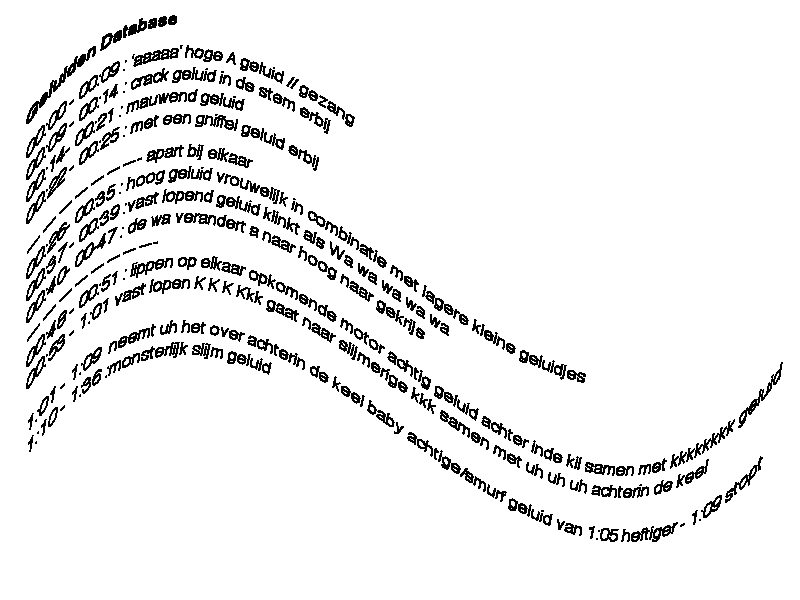
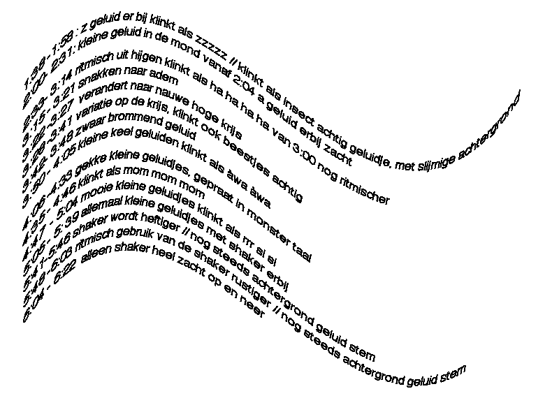
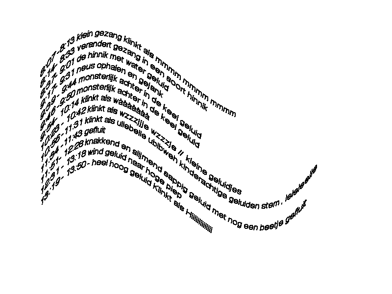
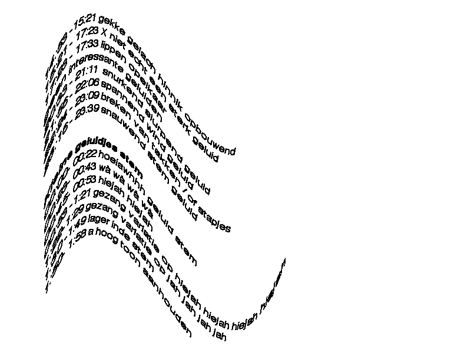
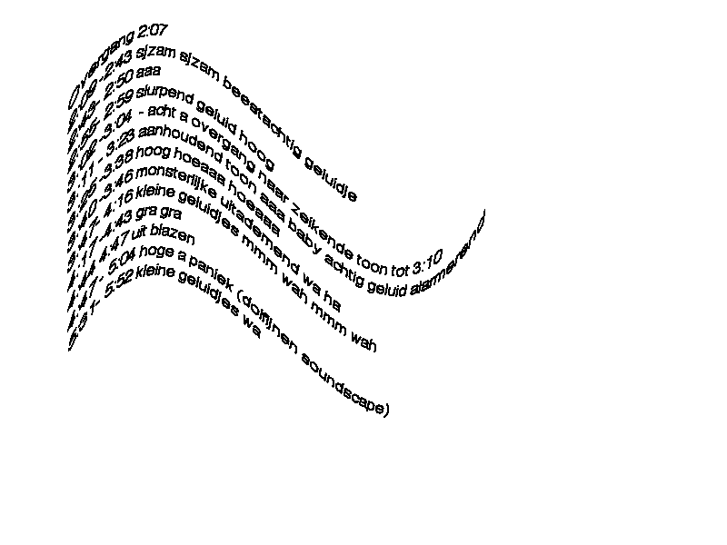
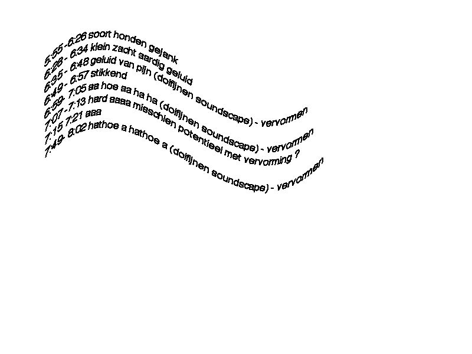
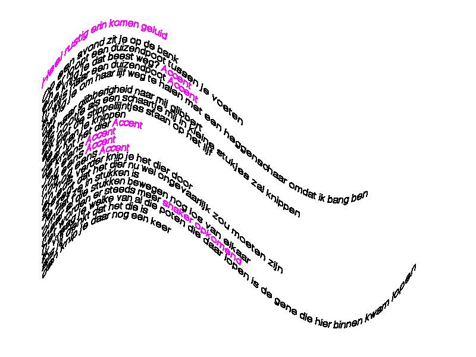
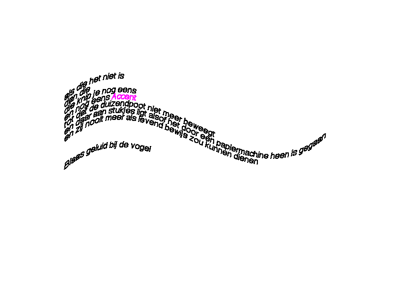
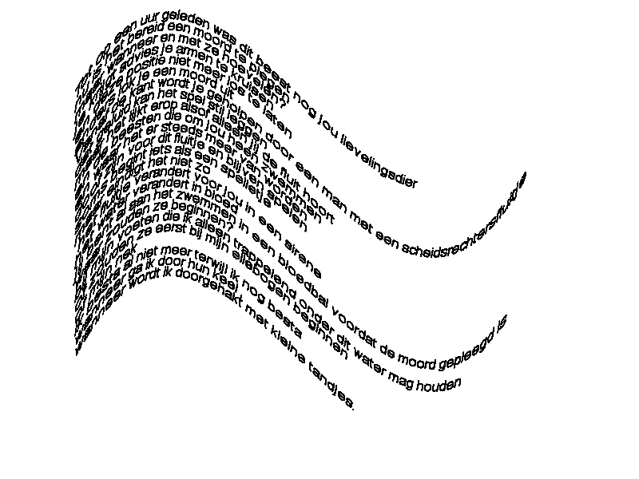
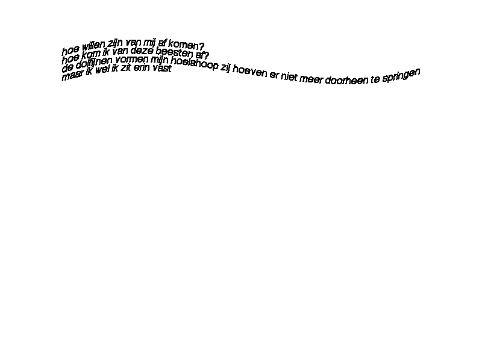